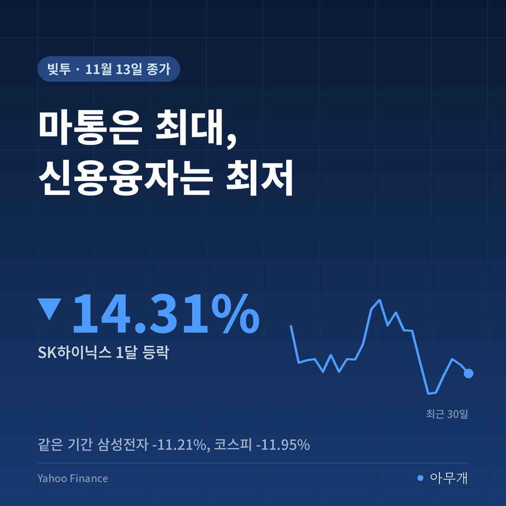
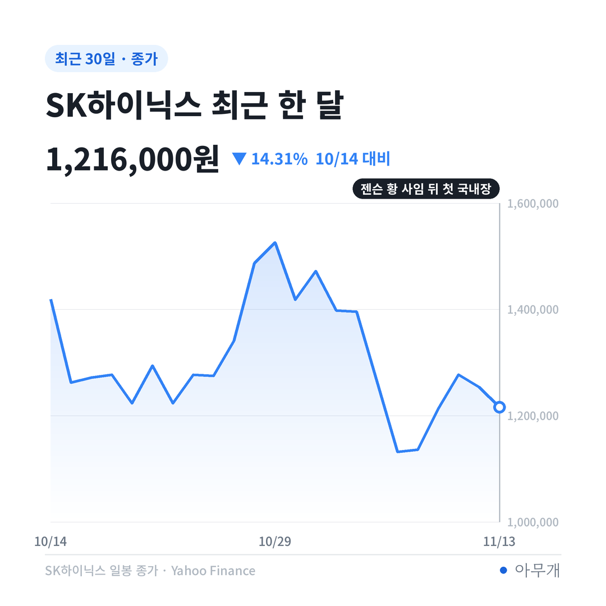
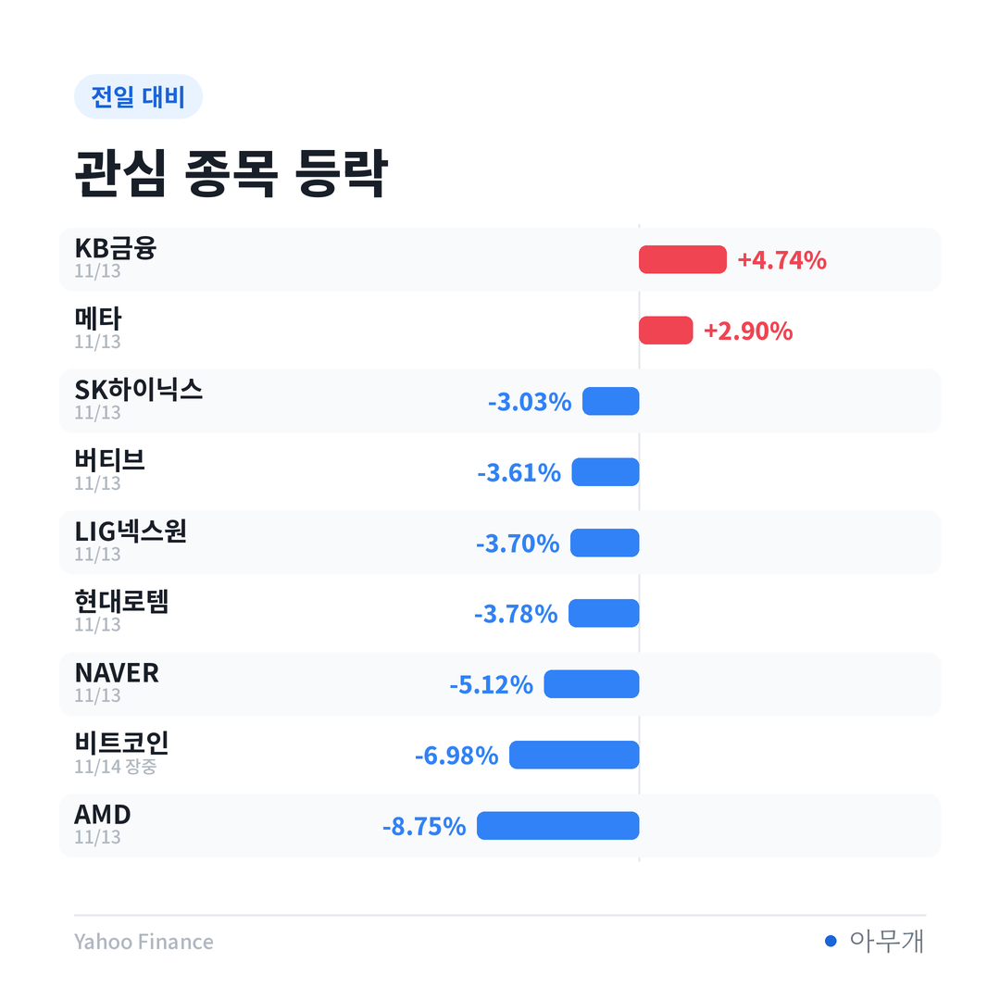
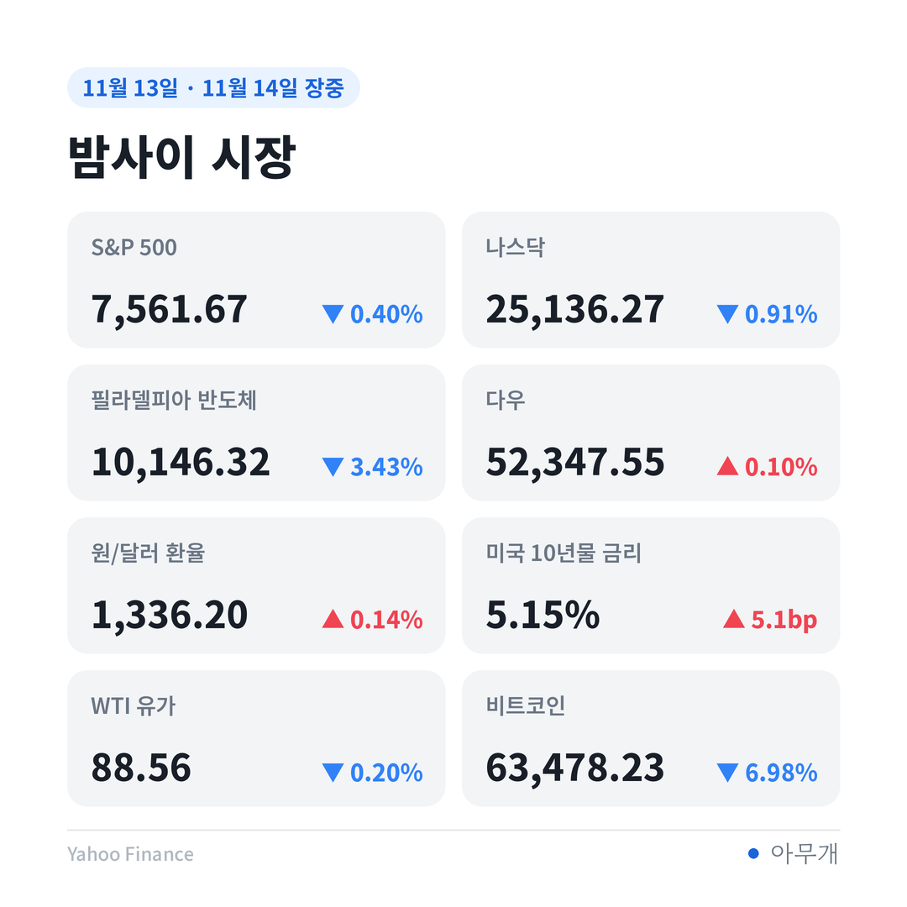

📷 사진 1 자리
증권사 빚은 줄고 은행 빚은 늘었다
주식 빚을 보여 주는 숫자는 보통 증권사 신용거래융자예요. 이 숫자는 6월 무렵 38.6조원으로 사상 최대였는데[4], 최근 25조7,729억원까지 내려왔어요[3]. 약 12조8천억원, 33% 정도 줄어든 셈이에요.
그런데 은행 쪽 숫자는 반대로 움직였어요. 5대 은행(KB국민·신한·하나·우리·NH농협) 마통 잔액은 지난해 말 39조9,275억원에서 11월 12일 44조2,632억원으로 4조3,357억원(10.9%) 불었어요[1]. 11월 들어 12일 만에 6,682억원이 늘어 10월 한 달 증가액 6,115억원을 이미 넘었어요[1].
| 구분 | 어디 빚 | 최근 숫자 | 흐름 |
|---|---|---|---|
| 신용거래융자 | 증권사 | 25조7,729억원[3] | 6월 38.6조원 고점[4]에서 약 33% 감소 |
| 마이너스통장 | 은행 | 44조2,632억원[1] | 작년 말 대비 +10.9%[1] |
| 반대매매 | 증권사 | 한 주 1,345억원[3] | 전주 365억원의 3.7배[3] |
마통 잔액표에 적힌 것
은행 자료를 달별로 보면 마통은 4월 말 39조5,904억원에서 7월 말 44조1,732억원까지 올랐다가, 9월 말 42조9,835억원으로 잠시 줄었어요[1]. 10월 말 43조5,950억원, 11월 12일 44조2,632억원으로 다시 오름세예요[1]. 2022년 8월 말 44조7,699억원과 차이는 이제 5,067억원뿐이에요[1].
같은 표에서 눈에 띄는 건 대기 자금이에요. 언제든 꺼낼 수 있는 요구불예금은 9월 말 이후 19조원 넘게 빠졌고[1], 개인이 6개월 이하로 맡기는 정기예금 신규 가입은 10월 13조2,888억원으로 1년 전보다 17.7% 적었어요[1]. 반면 증시 대기 자금인 투자자 예탁금은 12일 92조2,347억원으로 4거래일 만에 90조원 위로 돌아왔어요[3].
| 구분 | 내용 |
|---|---|
| ✅ 확인된 숫자 | 마통 잔액 증가, 요구불예금 감소, 단기 정기예금 신규 감소(5대 은행 자료)[1] |
| ✅ 확인된 숫자 | 신용융자 감소, 반대매매 증가, 예탁금 90조원 회복[3] |
| 🗣️ 해석 | 마통으로 '빚투'에 나섰다는 건 은행권 해석이에요. 반등 때 바로 넣으려고 마통을 쓴다는 시중은행 관계자 설명이 근거예요[1] |
| ⚠️ 없는 통계 | 마통 증가분 중 실제로 주식에 들어간 금액은 따로 집계되지 않아요 |
140%선이 만든 차이
두 빚의 가장 큰 차이는 반대매매예요. 증권사 신용융자는 담보유지비율 140%를 지켜야 하고, 이 선이 깨지면 증권사가 주식을 강제로 팔 수 있어요[5][6]. 정부는 이 140% 의무를 한시적으로 면제했고[5][6], 면제는 내년 1월 31일(일요일)까지예요[7].
산수로 보면 이 선이 얼마나 가까운지 보여요. 내 돈 1,000만원에 신용 1,000만원을 더해 2,000만원어치를 샀다면 처음 담보비율은 200%이고, 주가가 30% 빠져 평가액이 1,400만원이 되면 140%에 닿아요. 반면 마통으로 산 주식은 아무리 빠져도 은행이 팔지 않아요. 대신 손실과 이자가 그대로 내 몫으로 남아요.
그래서 신용융자 숫자가 줄었다는 것만으로 빚투가 끝났다고 보긴 어려워요. 반대매매로 정리된 빚도 있고, 처음부터 강제 매도가 없는 마통으로 옮긴 빚도 있을 수 있어요. 뉴스토마토 칼럼은 기준이 다시 140%로 돌아오면 담보가 모자란 계좌의 매도가 한꺼번에 몰릴 수 있다고 짚었어요[7].
삼전닉스에 몰린 빚
증권사 빚이 어디에 있는지도 숫자로 나와 있어요. 12일 기준 삼성전자 신용융자 잔고는 3조6,358억원, SK하이닉스는 3조3,311억원으로 둘을 합치면 6조9,669억원이에요[8]. 코스피·코스닥 전체 신용융자(25조5,976억원, 에프앤가이드 집계)의 27.2%, 코스피만 보면 36.5%예요[8].
📷 사진 2 자리
이 쏠림은 새로운 일이 아니에요. 7월 초에도 코스피 빚투의 36%가 두 종목에 있다는 보도가 나왔어요[9]. 넉 달 동안 전체 빚은 줄었는데, 두 종목 비중은 거의 그대로인 셈이에요.
코스피는 13일 5,290.53(-0.98%)으로 닫았고, 1주로는 +4.56%, 1달로는 -11.95%예요. SK하이닉스는 1,216,000원(-3.03%), 삼성전자는 206,000원(-0.96%)이었어요. 지난 한 주 반등했어도 1달 기준으로는 둘 다 두 자릿수 하락이에요.
📷 사진 3 자리
마통으로 산 주식, 계좌로 옮겨 보면
마통 1,000만원으로 한 달 전 SK하이닉스를 샀다면, 1달 등락 -14.31%를 적용해 약 143만원이 줄어든 셈이에요. 일주일 전에 샀다면 +7.42%로 약 74만원 이익이에요. 같은 종목, 같은 빚인데 들어간 날짜에 따라 결과가 이만큼 갈려요.
여기에 마통 이자가 매달 붙어요. 금리 쪽 분위기도 가볍지 않아요. 신현송 한국은행 총재는 성장률이 오르면 균형 금리도 따라 오른다고 했고, 국정감사에서는 초저금리 시대로 돌아가기 어렵다는 입장을 밝혔어요[10]. 우리나라 가계 신용 잔액은 6월 말 2,019조8,000억원으로 처음 2,000조원을 넘었어요[10].
📷 사진 4 자리
은행들은 단기 자금을 잡으려 특판을 내놓고 있어요. 신한은행은 19일부터 코스피200 연동 3개월 ELD(주가지수연동예금)를 최저 연 3.2%, 최고 연 3.6%로 모집하고, 우리은행 3·6·9개월 예금은 출시 때 연 3.40·3.75·3.80%였어요[1]. 마통 이자와 이 숫자를 나란히 놓아 보면 빚을 낸 투자가 넘어야 할 문턱이 보여요.
갈림길 세 가지
| 시나리오 | 무엇을 보면 되나 | 예상되는 영향 |
|---|---|---|
| 반등이 이어지는 경우 | 17일(현지) 엔비디아 실적 뒤 SK하이닉스·삼성전자 흐름[11][12] | 마통 대기 자금이 빠르게 들어오며 반등 폭을 키울 수 있음 |
| 다시 밀리는 경우 | 주간 반대매매가 1,345억원[3] 위로 늘어나는지 | 신용융자는 더 줄고, 마통 빚은 손실을 안은 채 남을 수 있음 |
| 면제가 끝나는 경우 | 1월 31일 140% 기준 복귀와 증권사별 대응[7] | 담보가 모자란 계좌의 매도가 같은 시기에 몰릴 수 있음 |
이번 숫자에서 가장 눈에 띈 건 신용융자 최저와 마통 최대가 같은 주에 나왔다는 점이에요. 강제 매도가 무서워 증권사 빚을 줄인 사람이 있다면, 마통은 그 공포를 없애 주는 대신 손실을 오래 들고 가게 만드는 빚이에요. 그래서 지금 빚투의 크기는 신용융자보다 마통 쪽 숫자로 보는 게 더 맞을 것 같아요.
✍️ 직접 보거나 들은 경험이 있으면 위 문단에 한두 줄 덧붙이세요 (이 안내 줄은 지우기)
반대로 보면, 마통 증가를 모두 주식으로 볼 근거는 없어요. 생활비·전월세 같은 다른 쓰임도 섞여 있고, 은행 설명도 해석일 뿐이에요[1]. 반대매매가 없는 빚으로 옮긴 건 오히려 급락 때 헐값 매도를 피하는 선택이라 시장 전체의 연쇄 매도 위험을 줄인다는 시각도 가능해요.
이번 주 달력
참고한 기사
이 글은 정보 제공 목적이며 투자 권유가 아닙니다. 투자 판단과 책임은 본인에게 있습니다.
수치 출처: Yahoo Finance(시장 숫자), 5대 은행 자료(연합뉴스 취합), 에프앤가이드(신용융자 종목별, 연합뉴스 인용)



